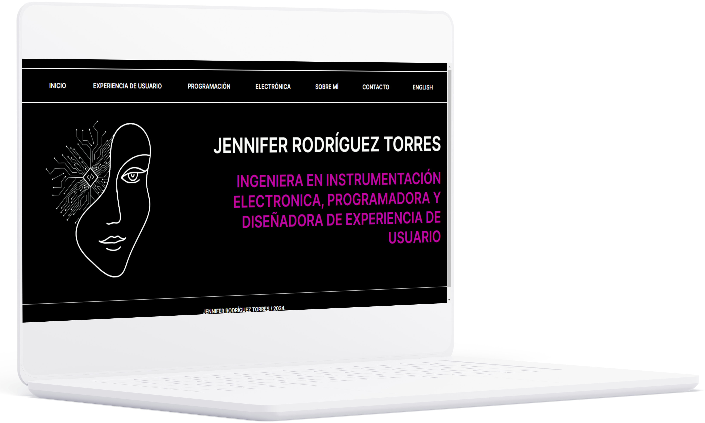

El problema
Necesito desarrollar un portfolio profesional en línea que permita a los reclutadores y personas interesadas ver claramente mis habilidades y proyectos anteriores.
La meta:
Crear una plataforma atractiva y fácil de navegar que destaque mis logros y habilidades, mostrando de manera concisa y convincente mi experiencia y contribuciones profesionales.
Mi rol: |
Publico objetivo: |
|
Diseñadora de UX/UI y Programadora. |
Reclutadores, potenciales empleadores y personas interesadas en mi perfil profesional. |
Mis responsabilidades: |
Duración: |
|
Conceptualización, Planificación, Diseño de UX, Desarrollo Frontend, Organización de Contenidos, Optimización, Documentación, Promoción. |
Junio 2022- Mayo 2024 |
Proceso de Diseño:
Cuando comencé a estudiar Diseño de Experiencia de Usuario, el programa promovía la creación de un portfolio para exhibir todos mis proyectos. Además, tenía el interés de aprender a programar frontend para poder mostrar mis proyectos de programación, UX y electrónica. Como parte de este proceso, revisé varios ejemplos de portfolios y busqué aquellos que se alinearan con mi estilo y la expresión que deseaba transmitir. Desarrollé múltiples versiones de diseño para mi portfolio, pero la versión final, creada en Figma que aprendí durante el curso de UX, fue la seleccionada. En resumen, seleccioné elementos que se adaptaran a mi estilo personal, buscando un diseño minimalista pero creativo que reflejara mi identidad.


Desarrollo Frontend:
En este portfolio, he utilizado exclusivamente herramientas de programación frontend como HTML y CSS. A finales de 2022, comencé a aprender de manera autodidacta HTML y CSS, practicando repetidamente en mi portfolio y otros proyectos simples que planeo implementar en el futuro para beneficiar a mi comunidad. Inicialmente, trasladé todos los elementos de mi diseño de Figma a HTML y luego los organicé en la página de acuerdo con mi diseño en Figma, aplicando estilos personalizados con CSS. Además, optimicé las imágenes comprimiéndolas para reducir su tamaño de archivo y mejorar el tiempo de carga en el navegador. Actualmente, el portfolio está diseñado para ser visualizado únicamente en navegadores de escritorio.

Integración de Contenido y Funcionalidades:
En términos generales, organicé el portfolio de manera intuitiva y sencilla para minimizar errores de uso y facilitar la visualización de todos los proyectos en los que he trabajado. Dividí el portfolio en categorías según los proyectos relacionados con diseño de UX, programación y electrónica. Además, incluí una sección "Sobre mí" donde comparto mis intereses tanto profesionales como personales, mis habilidades y proporciono información de contacto a través de mi correo electrónico, así como acceso a mi currículum vitae. Para una mayor transparencia y colaboración, el código fuente de este portfolio está disponible en el siguiente enlace:
Codigo de mi portfolio en Github.
Aprendizajes y reflexiones
Este proyecto ha sido una labor que he realizado en mis momentos libres, la cual he llegado a disfrutar y apreciar profundamente como parte de mi interés por la programación y el diseño de experiencia de usuario (UX). En el camino, me he enfrentado a varios desafíos, desde cuestiones relacionadas con el diseño que no me convencían hasta la complejidad de implementar y posicionar elementos en HTML y CSS. A medida que he trabajado en ello, he aprendido a dominar la semántica y las técnicas fundamentales de estos lenguajes de programación mediante una práctica constante. Considero que este proyecto es una oportunidad para mostrar al público en general mis capacidades y la pasión que siento por lo que he aprendido, y tengo el deseo de seguir aprendiendo, un interés que nació en la preparatoria. Espero que este trabajo pueda servir de ayuda a otros principiantes en el campo de la programación y el diseño de UX, y quiero transmitir el mensaje de que no hay que rendirse frente a los desafíos y y les motive a perseverar en lo que aman hacer.